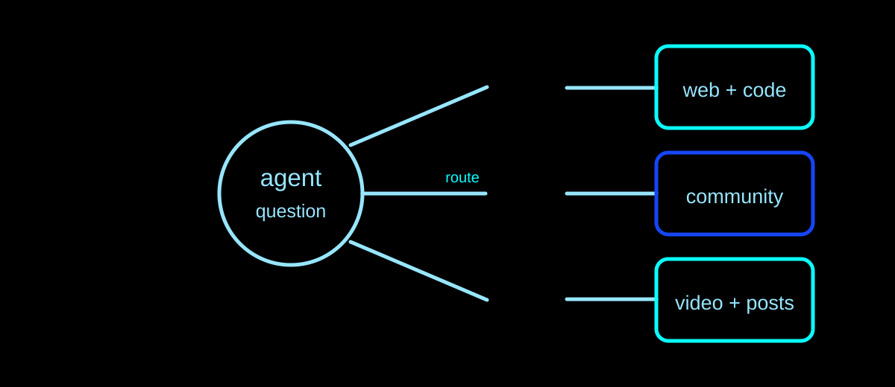

Agent research
Agent-Reach: A Cross-Platform Research CLI for AI Agents
Agent-Reach is an open-source command-line project that gives an AI-agent workflow a common way to search and read selected public web platforms. Its value is orchestration: one research task can span the open web, GitHub, video, and community sources without treating every source as the same.
Published

Quick definition
Agent-Reach is a CLI-oriented research tool for AI agents. Its project documentation describes channels for services such as web search, YouTube, GitHub, Reddit, Bilibili, and others, with availability that can differ by channel and configuration.
Where it fits
Use it when a question genuinely crosses platforms: for example, finding a project’s repository, reading its release notes, then checking how developers discuss a breaking change. That is different from ordinary crawling. A crawler starts from URLs; this kind of tool begins with a research question and routes work through platform-specific readers.
Build a small schema before collecting anything: platform, URL, published time, author or publisher, excerpt, and access conditions. Without that, a cross-platform search turns into an attractive but uncheckable collage.
What to verify first
Read the live channel list and installation guide. The project’s releases have changed default, optional, and experimental channels, so an article should never promise access to every platform. Check whether a channel needs login state, a separate dependency, or permission to use a platform’s data.
Research note
This profile is based on the project’s public release notes and README-level documentation, accessed on November 24, 2026. It is not a hands-on benchmark or an endorsement of any channel.
Limits
Platform markup, anti-automation controls, rate limits, and terms change. A successful search is not permission to republish a post, bypass access controls, or collect personal data. Keep source URLs and revisit the original material before making a time-sensitive claim.